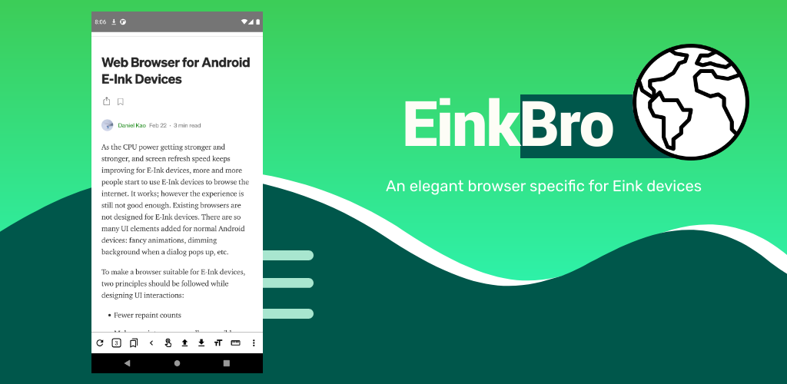

EinkBrowser es un navegador simple, liviano, rápido, especialmente diseñado para dispositivos de tinta electrónica. Es un navegador basado en webview que no necesita permisos innecesarios.

Me gusta mucho ya que es super rápido y aunque rompe un poco con el modo de uso de los navegadores convencionales, una vez que te habituas a su uso, es muy práctico.
Me gusta mucho la opción que tiene de crear dos botones en la pantalla, para hacer scroll hacia abajo o hacia arriba. Este modo hace que el visionado de las webs seam más rápido.
admite combinaciones de teclas VI (útil cuando el dispositivo está conectado con un teclado bluetooth)
Publicado por Angel el sábado 10 abril del 2021
También te puede interesar:
Powered by org-bash-blog
Writing in orgmode whith emacs

Este obra está bajo una licencia de Creative Commons Reconocimiento-NoComercial-CompartirIgual 4.0 Internacional.